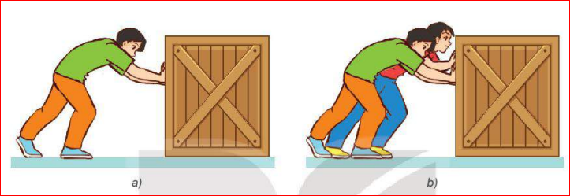
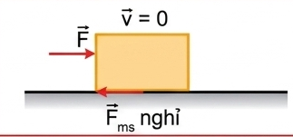
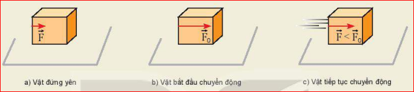
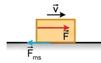
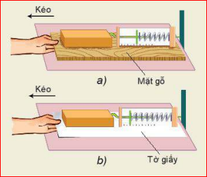
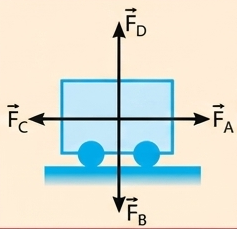
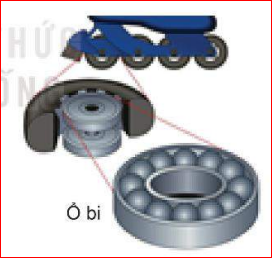

Điều gì ngăn cản thùng hàng (Hình a), khiến nó không thể di chuyển? Tại sao lực đẩy tăng lên (Hình b) mà vẫn không làm cho thùng hàng di chuyển?
Có cách nào làm thùng hàng di chuyển dễ dàng hơn không?


Hình 18.1

Hình 18.2: a) Vật đứng yên; b) Vật bắt đầu chuyển động; c) Vật tiếp tục chuyển động

Hình 18.3

Hình 18.4| Bề mặt tiếp xúc | Độ lớn lực ma sát trượt (N) | |||
|---|---|---|---|---|
| Lần 1 | Lần 2 | Lần 3 | Trung bình | |
| Mặt gỗ | ||||
| Mặt giấy | ||||
a) Nêu các lực tác dụng lên khối gỗ khi mặt tiếp xúc bên dưới nó được kéo trượt đều. Tại sao khi đó số chỉ của lực kế bằng độ lớn của lực ma sát trượt?
b) Sắp xếp thứ tự theo mức tăng dần lực ma sát trên mỗi bề mặt.
c) Điều gì xảy ra đối với độ lớn của lực ma sát trượt khi diện tích tiếp xúc thay đổi, khi vật liệu và tình trạng của bề mặt tiếp xúc thay đổi?
| Áp lực của các khối gỗ (N) | Độ lớn lực ma sát trượt (N) | |||
|---|---|---|---|---|
| Lần 1 | Lần 2 | Lần 3 | Trung bình | |
| 1 khối gỗ: | ||||
| 2 khối gỗ: | ||||
| 3 khối gỗ: | ||||
a) Hệ số ma sát trượt
Tỉ số giữa độ lớn của lực ma sát trượt \( F_{ms} \) và áp lực \( N \) gọi là hệ số ma sát trượt, kí hiệu là \( \mu \). Hệ số \( \mu \) phụ thuộc vào vật liệu và tình trạng của hai mặt tiếp xúc.
b) Công thức tính lực ma sát trượt
Bảng 18.3. Hệ số ma sát trượt (gần đúng) của một số cặp vật liệu
| Cặp vật liệu tiếp xúc nhau | \( \mu \) |
|---|---|
| Gỗ trên gỗ (khô) | 0,20 |
| Thép trên thép (khô) | 0,57 |
| Thép trên thép (trơn) | 0,07 |
| Cao su trên bê tông (khô) | 0,70 |
| Cao su trên bê tông (ướt) | 0,50 |
| Cao su trên băng | 0,10 |
Một người đi xe đạp có khối lượng tổng cộng \( m = 86 \, \text{kg} \) đang chuyển động trên đường nằm ngang với vận tốc \( v_0 = 4 \, \text{m/s} \). Nếu người đi xe ngừng đạp và hãm phanh để giữ không cho các bánh xe quay, xe trượt đi một đoạn đường 2m thì dừng lại.
1. Lực nào đã gây ra gia tốc cho xe? Tính độ lớn của lực này.
2. Tính hệ số ma sát trượt giữa mặt đường và lốp xe? Lấy \( g = 10 \, \text{m/s}^2 \).
Giải: Khi tính lực và gia tốc, ta coi người + xe là chất điểm. Chọn chiều dương là chiều chuyển động của người và xe. [cite: 104, 105]
1. Gia tốc: \( a = \frac{v_t^2 - v_0^2}{2 \cdot s} = \frac{0 - 16}{2 \cdot 2} = -4 \, \text{m/s}^2 \) [cite: 106, 107]
Lực gây ra gia tốc này là lực ma sát trượt: \( F = m \cdot a = 86 \cdot (-4) = -344 \, \text{N} \) [cite: 108, 109]
2. Hệ số ma sát trượt: \( F_{ms} = \mu N \Rightarrow \mu = \frac{F_{ms}}{N} \)[cite: 111, 112]. Do đi ngang nên \( N = P = m \cdot g \)[cite: 113].
\( \Rightarrow \mu = \frac{344}{86 \cdot 10} = 0,4 \)[cite: 114].
1. Các lực tác dụng lên xe chở hàng được quy ước vẽ tại trọng tâm của xe (Hình 18.5):
a) Các lực này có tên gọi là gì?
b) Hãy chỉ ra các cặp lực cân bằng nhau.
2. Để đẩy chiếc tủ, cần tác dụng một lực theo phương nằm ngang có giá trị tối thiểu 300N để thắng lực ma sát nghỉ. Nếu một người kéo tủ với lực 35N và người kia đẩy tủ với lực 260N, có thể làm dịch chuyển tủ được không? Biểu diễn các lực tác dụng lên tủ.

Hình 18.5
Nêu vai trò của lực ma sát trong các tình huống sau:
a) Người di chuyển trên đường.
b) Vận động viên thể dục dụng cụ xoa phấn vào lòng bàn tay trước khi nâng tạ.
1. Thảo luận để làm sáng tỏ những vấn đề sau đây: Trong thực tế, có một số trường hợp lực ma sát có tác dụng cản trở chuyển động, nhưng cũng có trường hợp lực ma sát thúc đẩy chuyển động. Vai trò của ma sát trong lĩnh vực thể thao.
2. Nêu một số cách làm giảm ma sát trong kĩ thuật và trong đời sống.
Trong các điều kiện cùng áp lực N thì lực ma sát nghỉ tác dụng vào các vật lăn nhỏ hơn lực ma sát trượt tác dụng lên các vật trượt rất nhiều.
Trong đời sống và kĩ thuật, để giảm ma sát người ta thay vật trượt bằng vật lăn (hình cầu hoặc hình trụ) như dùng ổ bi (Hình 18.6).

Thuyết trình về ích lợi, tác hại của ma sát trong an toàn giao thông đường bộ.
Câu 1: Lực ma sát trượt xuất hiện khi nào?
Câu 2: Hệ số ma sát trượt \( \mu \) phụ thuộc vào yếu tố nào?
Câu 3: Công thức tính lực ma sát trượt là gì?
Câu 4: Biện pháp nào sau đây giúp làm giảm ma sát hiệu quả nhất trong chế tạo máy?
Câu 5: Phát biểu nào đúng về lực ma sát nghỉ?
Giải thích chi tiết:
Câu 1: B (Theo định nghĩa: lực ma sát trượt cản trở vật trượt trên bề mặt tiếp xúc).
Câu 2: C (Hệ số \(\mu\) phụ thuộc vào vật liệu và tình trạng bề mặt tiếp xúc, không phụ thuộc diện tích).
Câu 3: B (\( F_{ms} = \mu \cdot N \)).
Câu 4: B (Thay ma sát trượt bằng ma sát lăn kết hợp dầu mỡ là cách giảm ma sát hiệu quả).
Câu 5: B (Lực ma sát nghỉ giữ vật không trượt khi có xu hướng chuyển động).
Bài 1: Một vật có khối lượng 10kg được kéo trượt đều trên mặt sàn nằm ngang. Hệ số ma sát trượt giữa vật và sàn là 0,2. Lấy \( g = 10 \, \text{m/s}^2 \). Tính độ lớn lực kéo.
Vật trượt đều nằm ngang \( \Rightarrow \) Lực kéo \( F = F_{ms} \)
Áp lực \( N = P = m \cdot g = 10 \cdot 10 = 100 \, \text{N} \)
Lực ma sát trượt: \( F_{ms} = \mu \cdot N = 0,2 \cdot 100 = 20 \, \text{N} \)
Vậy độ lớn lực kéo là 20N.
Bài 2: Một ô tô khối lượng 1500kg đang chạy với vận tốc 20 m/s thì hãm phanh. Xe trượt thêm 40m thì dừng lại. Tính lực ma sát trượt giữa bánh xe và mặt đường (coi như không có ma sát cản của không khí).
Gia tốc của xe: \( a = \frac{v^2 - v_0^2}{2s} = \frac{0^2 - 20^2}{2 \cdot 40} = -5 \, \text{m/s}^2 \)
Định luật II Newton (chiều dương cùng chiều chuyển động): \( -F_{ms} = m \cdot a \)
\( \Rightarrow F_{ms} = -m \cdot a = -1500 \cdot (-5) = 7500 \, \text{N} \)
Bài 3: Một thùng gỗ khối lượng 50kg đặt trên sàn ngang. Hệ số ma sát nghỉ cực đại giữa thùng và sàn là 0,4. Hỏi phải dùng một lực đẩy tối thiểu bao nhiêu theo phương ngang để thùng bắt đầu nhúc nhích? (\( g = 10 \, \text{m/s}^2 \)).
Để thùng bắt đầu nhúc nhích, lực đẩy phải ít nhất bằng lực ma sát nghỉ cực đại.
\( F_{đẩy} \ge F_{ms\_nghỉ\_max} = \mu_{n} \cdot N \)
Do đặt trên sàn ngang: \( N = P = m \cdot g = 50 \cdot 10 = 500 \, \text{N} \)
\( F_{đẩy} \ge 0,4 \cdot 500 = 200 \, \text{N} \). Vậy lực đẩy tối thiểu là 200N.